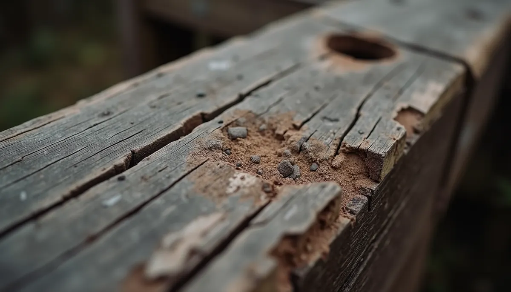
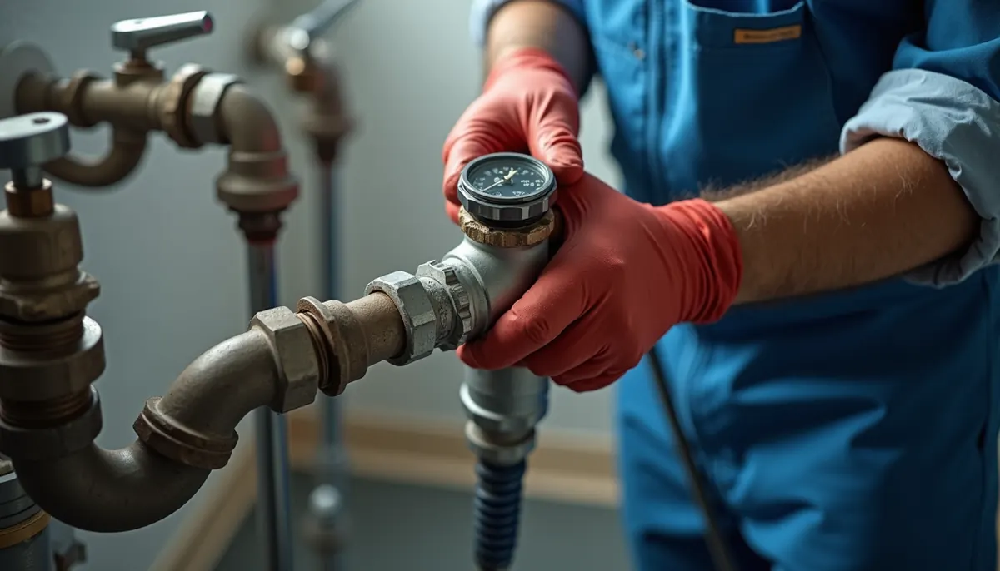

As a homeowner in Murfreesboro, you probably know the satisfaction of a well-kept home. However, what about the hidden issues that lie beneath the surface? Hidden leaks can hide behind walls, under flooring, or deep within pipes, causing damage and leading to costly repairs over time.
At Angle Stop Plumbing, we understand the silent dangers posed by even the smallest leak. That's why we stress the importance of regular plumbing inspections. It's about not just fixing issues, but preventing them before they escalate.
The Sneaky Nature of Hidden Leaks
Unlike sudden bursts that grab your attention, hidden leaks often go unnoticed. They can begin as a minor drip from corroded pipes, a small pinhole in a supply line, or a slow seep from aging seals. Most times, you won’t even notice a drop in water pressure. Over time, these minor leaks can result in serious issues, such as:
- Rotting Wood: Water seeping into structural elements can lead to significant rot. For example, 25% of homes in humid areas experience wood rot due to hidden leaks, jeopardizing their integrity.

- Mold and Mildew Growth: Mold thrives in damp conditions. Homes with undetected leaks can develop mold, affecting 1 in 3 homes and leading to respiratory issues. Remediation can easily cost thousands of dollars.
- Damaged Drywall and Flooring: Indicators like water stains, warped baseboards, or bubbling drywall signal hidden leaks. In fact, repairing water-damaged drywall begins around $1.50 per square foot.
- Increased Water Bills: A constant leak, no matter how small, can increase your monthly water bill by up to 15% or more. That can add up to hundreds of dollars over a year.
- Pest Infestations: Damp wood is a magnet for pests, including termites. This can lead to further damage and costly pest control services.
The Preventative Power of Professional Plumbing Inspections
Angle Stop Plumbing provides effective routine inspections designed to uncover elusive leaks before they escalate into financial burdens. Our trained professionals utilize advanced equipment and methods to perform thorough checks of your plumbing system.
Beyond just looking for leaks, we assess water pressure, inspect water heaters, and evaluate the overall condition of your pipes. This proactive strategy means that we can spot potential problems and address them while they’re still manageable.
Regular inspections can result in considerable savings. For instance, a plumbing inspection can cost around $100, while repairs from extensive water damage can reach thousands of dollars.

DIY Leak Detection: The Homeowner’s Guide
While professional assessments are crucial, you can take steps to identify leaks on your own. Incorporate these straightforward checks into your routine:
- Monitor Your Water Usage: Look for spikes in your water bill. An unexplained increase could point to a hidden leak.
- Check Your Water Meter: When all water is off, check your meter. If it runs, it's a sign of a leak.
- Inspect for Water Damage: Frequently check your walls, ceilings, and floors for any signs of discoloration or soft spots. If something seems off, investigate immediately.
- Listen for Drips: Be alert for unusual sounds. If you hear running water with everything else turned off, investigate further.
- Use Food Coloring for Toilets: Put a few drops of food coloring into the toilet tank. If the color shows up in the bowl within 30 minutes, you have a leak.
By consistently implementing these handy checks, you can catch leaks early and minimize damage to your home.
The Importance of Timing
Timing is crucial when it comes to plumbing inspections. Many homeowners wait until significant issues arise before seeking help, which can be a costly blunder. We recommend scheduling routine inspections at least once a year, or more often if your home is older (over 20 years).
During these inspections, our plumbers can offer tailored recommendations suited specifically to your plumbing system. This guidance can help you prioritize repairs and ensure your money is invested wisely.
Safeguarding Your Home and Wallet
Hidden leaks can cause severe damage to your home and finances. They act quietly, undermining the integrity of your property. Regular plumbing inspections by Angle Stop Plumbing serve as a strong defense against these stealthy leaks, giving you peace of mind.
Don't wait for a major leak to occur before taking action. Commit to routine plumbing inspections to protect your investment. Reach out to Angle Stop Plumbing today to schedule your inspection and keep your home a safe and secure space for years to come!
By taking these proactive measures, you will not only shield your home from hidden leaks but also save money along the way. Let’s work together to keep your home safe and leak-free!